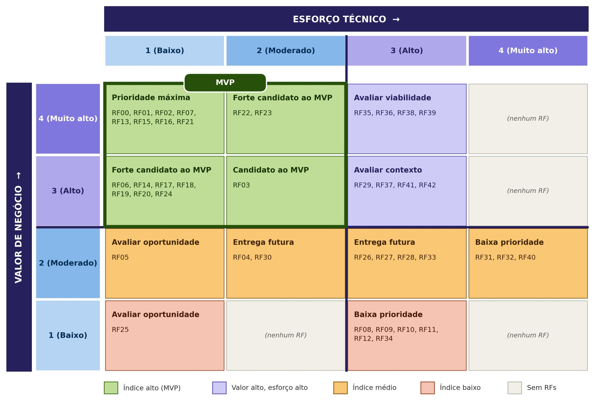

10 Escopo de Produto
10.1 Escopo Geral
O escopo geral tem 43 códigos de requisito funcional; RF36, RF37 e RF40 foram incorporados ao RF35 e não são reutilizados. A especificação de cada requisito, com declaração, regras de negócio e critérios de aceitação, está somente na sua ficha (o código leva a ela). Este backlog não repete critérios, para que não exista uma segunda especificação.
| Código | Requisito | Entrega |
|---|---|---|
| RF00 | Encerrar sessão | MVP |
| RF01 | Autenticar usuário | MVP |
| RF02 | Controlar acesso | MVP |
| RF03 | Cadastrar turma | MVP |
| RF04 | Editar turma | Pós-MVP |
| RF05 | Inativar turma | Pós-MVP |
| RF06 | Associar aluno à turma | MVP |
| RF07 | Consultar alunos de uma turma | MVP |
| RF08 | Registrar doação recebida | Pós-MVP |
| RF09 | Editar doação recebida | Pós-MVP |
| RF10 | Registrar documentos de prestação de contas | Pós-MVP |
| RF11 | Editar documentos de prestação de contas | Pós-MVP |
| RF12 | Consultar doações e prestações de contas | Pós-MVP |
| RF13 | Publicar conteúdo institucional | MVP |
| RF14 | Editar conteúdo institucional | MVP |
| RF15 | Consultar conteúdo institucional | MVP |
| RF16 | Remover conteúdo institucional | MVP |
| RF17 | Publicar evento | MVP |
| RF18 | Editar evento | MVP |
| RF19 | Remover evento | MVP |
| RF20 | Consultar eventos | MVP |
| RF21 | Cadastrar aluno | MVP |
| RF22 | Editar aluno | MVP |
| RF23 | Consultar ficha do aluno | MVP |
| RF24 | Inativar aluno | MVP |
| RF25 | Remover dados do aluno | Pós-MVP |
| RF26 | Registrar frequência | Pós-MVP |
| RF27 | Consultar frequência | Pós-MVP |
| RF28 | Emitir alerta de faltas críticas | Pós-MVP |
| RF29 | Registrar medida disciplinar | Pós-MVP |
| RF30 | Publicar aviso | Pós-MVP |
| RF31 | Consultar avisos | Pós-MVP |
| RF32 | Editar aviso | Pós-MVP |
| RF33 | Remover aviso | Pós-MVP |
| RF34 | Consultar histórico de avisos | Pós-MVP |
| RF35 | Solicitar matrícula online | Pós-MVP |
| RF36 | Preencher dados do aluno | Incorporado ao RF35 |
| RF37 | Informar dados do responsável legal | Incorporado ao RF35 |
| RF38 | Registrar consentimento de dados pessoais | Pós-MVP |
| RF39 | Registrar termo de uso de imagem | Pós-MVP |
| RF40 | Informar pessoas autorizadas a retirar o aluno | Incorporado ao RF35 |
| RF41 | Emitir comprovante de solicitação | Pós-MVP |
| RF42 | Analisar solicitações de matrícula | Pós-MVP |
10.2 Priorização do Escopo Geral e MVP
A priorização combinou dois modelos: o MoSCoW (Must, Should, Could e Won't have), usado para o valor de negócio e avaliado com o cliente, e a pontuação de esforço técnico atribuída pela equipe (esforço, complexidade e lacuna de capacidade). Os dois critérios orientam o desenvolvimento de acordo com os objetivos do projeto e formam a matriz 4 × 4 da seção 10.2.2.
O MVP é o conjunto mínimo de funcionalidades que permite lançar o produto e colocá-lo em uso pelo cliente, com foco nos requisitos essenciais para validar o valor de negócio. Na matriz final (seção 10.2.2), o MVP reúne os RFs com valor de negócio 3 ou 4 e esforço técnico 1 ou 2: 18 dos 43 requisitos.
10.2.1 Critérios de priorização
Esforço técnico: avaliado pela equipe em três dimensões, todas orientadas no mesmo sentido (maior nota, maior dificuldade).
| Pontuação | Esforço | Complexidade | Lacuna de capacidade da equipe |
|---|---|---|---|
| 1 | Até 2 horas | Solução conhecida, com poucas dependências | A equipe domina plenamente o necessário |
| 2 | Entre 2 e 5 horas | Exige alguma investigação ou integração | Conhecimento suficiente, com pouca aprendizagem adicional |
| 3 | Entre 5 e 8 horas | Várias dependências ou incertezas técnicas | A equipe precisa desenvolver conhecimentos relevantes |
| 4 | Mais de 8 horas | Elevada incerteza, integração crítica ou tecnologia não dominada | A equipe ainda não possui os conhecimentos ou recursos |
Como calcular: ET = (Esforço + Complexidade + Lacuna) / 3. Para posicionar o RF na matriz, o ET é arredondado para o inteiro mais próximo.
Valor de negócio (MoSCoW): avaliado com o cliente, com a escala abaixo.
| Pontuação | Classificação | Interpretação |
|---|---|---|
| 4 | Tem que ter (Must have) | Indispensável para resolver o problema central ou viabilizar o produto |
| 3 | Deveria ter (Should have) | Muito importante, mas o produto pode operar temporariamente sem o requisito |
| 2 | Poderia ter (Could have) | Agrega valor, mas pode ser adiado sem comprometer o objetivo principal |
| 1 | Não precisa ter (Won't have now) | Não é prioritário para a versão atual |
10.2.2 Matriz 4 × 4

Índice de prioridade
- Alto (MVP): valor de negócio 3 ou 4 e esforço técnico 1 ou 2. São 18 dos 43 RFs.
- Valor alto, esforço alto: valor 3 ou 4 e esforço 3 ou 4. Ficam fora do MVP e pedem avaliar a viabilidade ou o contexto (RF29, RF35, RF38, RF39, RF41 e RF42; RF36 e RF37 foram incorporados ao RF35).
- Médio: valor de negócio 2 (moderado), com qualquer esforço.
- Baixo: valor de negócio 1.
A coluna "Prior." ordena os índices: 1 (Alto), 2 (valor alto, esforço alto), 3 (Médio) e 4 (Baixo). Ela define grupos, não a ordem de construção dentro de cada grupo; essa ordem está na seção 10.3.
A partir dessas informações, foi gerada a seguinte tabela:
| Código | Índice | Prior. | MVP |
|---|---|---|---|
| RF02 | Alto | 1 | ✔ |
| RF07 | Alto | 1 | ✔ |
| RF15 | Alto | 1 | ✔ |
| RF16 | Alto | 1 | ✔ |
| RF22 | Alto | 1 | ✔ |
| RF00 | Alto | 1 | ✔ |
| RF03 | Alto | 1 | ✔ |
| RF17 | Alto | 1 | ✔ |
| RF18 | Alto | 1 | ✔ |
| RF19 | Alto | 1 | ✔ |
| RF20 | Alto | 1 | ✔ |
| RF23 | Alto | 1 | ✔ |
| RF14 | Alto | 1 | ✔ |
| RF01 | Alto | 1 | ✔ |
| RF21 | Alto | 1 | ✔ |
| RF06 | Alto | 1 | ✔ |
| RF24 | Alto | 1 | ✔ |
| RF13 | Alto | 1 | ✔ |
| RF35 | Valor alto, esforço alto | 2 | — |
| RF36 | Valor alto, esforço alto | 2 | — |
| RF29 | Valor alto, esforço alto | 2 | — |
| RF37 | Valor alto, esforço alto | 2 | — |
| RF39 | Valor alto, esforço alto | 2 | — |
| RF38 | Valor alto, esforço alto | 2 | — |
| RF42 | Valor alto, esforço alto | 2 | — |
| RF41 | Valor alto, esforço alto | 2 | — |
| RF04 | Médio | 3 | — |
| RF05 | Médio | 3 | — |
| RF27 | Médio | 3 | — |
| RF30 | Médio | 3 | — |
| RF31 | Médio | 3 | — |
| RF32 | Médio | 3 | — |
| RF33 | Médio | 3 | — |
| RF40 | Médio | 3 | — |
| RF26 | Médio | 3 | — |
| RF28 | Médio | 3 | — |
| RF25 | Baixo | 4 | — |
| RF12 | Baixo | 4 | — |
| RF34 | Baixo | 4 | — |
| RF08 | Baixo | 4 | — |
| RF09 | Baixo | 4 | — |
| RF11 | Baixo | 4 | — |
| RF10 | Baixo | 4 | — |
As notas do cliente e da equipe, os votos individuais e o cálculo que levaram aos resultados acima estão registrados em Comprovação de Evidência.
10.2.3 Justificativa da matriz e viabilidade do MVP
Por que alguns RFs ficaram com esforço alto. Na votação de 26/09/2026, as notas de esforço consideraram principalmente a tela de cada requisito. Ao montar a matriz final, em 30/10/2026, depois do detalhamento com o cliente de 21/10, a equipe reavaliou o esforço considerando todo o trabalho de um requisito pronto: persistência dos dados, validação das entradas, segurança e controle de acesso, testes automatizados e dependências de outros requisitos. Com isso, RF29, RF35 (com RF36 e RF37, depois incorporados a ele), RF38, RF39, RF41 e RF42, que pela média das notas (ET de 1,0 a 2,0) entrariam no MVP, passaram para esforço 3. A matrícula online (RF35 a RF42) recebe dados pessoais de crianças e adolescentes por um formulário público, o que exige validação e proteção dos dados exigidas pela LGPD, além do registro dos consentimentos com a versão vigente dos termos (PEN14), e só se completa com o cadastro do aluno (RF21, DEC18). O registro de medida disciplinar (RF29) ainda tem regras a definir com o cliente, como quem registra e o efeito sobre a matrícula (PEN13). A posição de cada RF na matriz e a diferença em relação ao ET estão na seção 5 da comprovação de evidência.
Viabilidade. As estimativas de esforço da matriz cobrem a implementação completa de cada requisito: interface, persistência, validação, segurança e testes automatizados. Pela escala da seção 10.2.1, os 18 RFs do MVP somam até cerca de 45 horas de implementação (15 RFs com esforço 1, até 2 horas cada, e 3 com esforço 2, até 5 horas cada). A capacidade da equipe é de cerca de 168 horas nas seis semanas de design e construção (Iterações 5 a 10): sete membros com cerca de 4 horas semanais cada. A implementação estimada ocupa cerca de um quarto dessa capacidade; o restante cobre prototipação, reuniões com o cliente, testes de aceite, documentação e correções. Por isso o MVP de 18 RFs cabe no prazo, enquanto os RFs de valor alto e esforço alto ficam para depois dele.
10.3 Backlog do MVP: ordem de construção e acompanhamento
A ordem segue as dependências: nenhuma ação da coordenação funciona sem autenticação, e as consultas dependem de existir o que consultar. O estado vem da seção Andamento de cada ficha, atualizada em 14/11/2026 com a reunião de 10/11. As issues de construção estão no GitHub, e nenhuma tem responsável atribuído até esta data.
| Ordem | RF | Depende de | Iteração prevista | Issue | Responsável | Estado | Pendência ou bloqueio |
|---|---|---|---|---|---|---|---|
| 1 | RF01 Autenticar usuário | — | 7 | #48 | não atribuído | Aceito pelo cliente em 10/11 | — |
| 2 | RF02 Controlar acesso | RF01 | 7 | #49 | não atribuído | Aceito pelo cliente em 10/11 | — |
| 3 | RF00 Encerrar sessão | RF01 | 7 | #47 | não atribuído | Aceito pelo cliente em 10/11 | — |
| 4 | RF13 Publicar conteúdo institucional | RF02 | 5 e 6 | #39 | não atribuído | Aceito pelo cliente em 10/11 | — |
| 5 | RF15 Consultar conteúdo institucional | RF13 | 5 e 6 | #41 | não atribuído | Aceito pelo cliente em 10/11 | — |
| 6 | RF14 Editar conteúdo institucional | RF13 | 5 e 6 | #40 | não atribuído | Aceito pelo cliente em 10/11 | — |
| 7 | RF16 Remover conteúdo institucional | RF13 | 5 e 6 | #42 | não atribuído | Aceito pelo cliente em 10/11 | — |
| 8 | RF17 Publicar evento | RF02 | 5 e 6 | #43 | não atribuído | Aceito pelo cliente em 10/11 | — |
| 9 | RF20 Consultar eventos | RF17 | 5 e 6 | #46 | não atribuído | Aceito pelo cliente em 10/11 | — |
| 10 | RF18 Editar evento | RF17 | 5 e 6 | #44 | não atribuído | Aceito pelo cliente em 10/11 | — |
| 11 | RF19 Remover evento | RF17 | 5 e 6 | #45 | não atribuído | Aceito pelo cliente em 10/11 | — |
| 12 | RF03 Cadastrar turma | RF02 | 8 | #50 | não atribuído | Construído na Iteração 8; teste de aceite pendente | — |
| 13 | RF21 Cadastrar aluno | RF02, RF03 | 10 | #53 | não atribuído | Protótipo aprovado; construção pendente | — |
| 14 | RF06 Associar aluno à turma | RF03, RF21 | 8 | #51 | não atribuído | Construído em parte na Iteração 8 (tela pronta; gravação depende de RF21) | Termina junto com RF21 (DEC33) |
| 15 | RF07 Consultar alunos de uma turma | RF06 | 8 | #52 | não atribuído | Construído na Iteração 8; teste de aceite pendente | — |
| 16 | RF23 Consultar ficha do aluno | RF21 | 10 | #55 | não atribuído | Protótipo aprovado; construção pendente | — |
| 17 | RF22 Editar aluno | RF21 | 10 | #54 | não atribuído | Protótipo aprovado; construção pendente | — |
| 18 | RF24 Inativar aluno | RF21 | 10 | #56 | não atribuído | Protótipo aprovado; construção pendente | — |
Ordem de turmas e alunos: RF06 e RF07 dependem de aluno cadastrado (RF21). Turmas foram construídas na Iteração 8 e alunos ficam para a Iteração 10; o RF06 só termina junto com o RF21, e até lá as turmas usam alunos de exemplo (DEC33). O conflito entre CP3 e a autenticação deixou de bloquear: as duas partes foram construídas e aceitas juntas em 10/11.
10.4 Dependências dos itens pós-MVP
| RF | Depende de | O que ainda precisa ser definido |
|---|---|---|
| RF29 Registrar medida disciplinar | RF21 (identificação do aluno) | Quem registra, data e efeitos de cada medida sobre a matrícula (PEN13) |
| RF38 e RF39 Termos | Texto e controle de versão dos termos | Como as versões dos termos são definidas e guardadas (PEN14); os aceites são separados na matrícula online (DEC25) |
| RF41 Emitir comprovante | RF35 (solicitação enviada e gravada) | — |
| RF42 Analisar solicitações | RF35 e RF41 (solicitações gravadas e consultáveis); RF21 (cadastro definitivo após a confirmação presencial) | O que a aprovação gera em turma e documentos pendentes (PEN12) |
10.5 RNFs que são condição da primeira versão
São os RNFs que se aplicam a pelo menos um RF do MVP. Cada um é verificado pelo critério de aceitação da sua ficha, como parte do DoD do RF a que se aplica.
| RNF | Aplica-se a (MVP) | Como é verificado |
|---|---|---|
| RNF01 Facilidade de aprendizado | RF03, RF07, RF13, RF14, RF17, RF18, RF21, RF23 | Teste com usuários novos: 80% concluem a tarefa em até 8 minutos, sem treinamento |
| RNF02 Interface responsiva | RF13 a RF20 | Telas públicas em larguras ≥ 360px, sem corte ou sobreposição |
| RNF03 Feedback em ações críticas | RF03, RF06, RF21, RF22, RF24 | Mensagem de sucesso ou erro em até 2s |
| RNF06 Tempo de resposta interno | RF03, RF06, RF07, RF22, RF23 | P95 ≤ 3s no teste de carga definido na ficha |
| RNF07 Carregamento da página pública | RF13 a RF20 | LCP ≤ 5s no Lighthouse com rede 2G simulada |
| RNF08 Acesso simultâneo | RF02 | P95 ≤ 3s no teste de carga definido na ficha |
| RNF09 Logs de operações críticas | RF13 a RF20 | Inspeção do log após criar, editar e remover |
| RNF10 Navegadores modernos | RF14, RF16, RF18, RF19, RF22, RF24 | Execução dos critérios de aceitação em Chrome, Firefox e Safari |
| RNF11 Controle de acesso | RF00 a RF03, RF06, RF07, RF21 a RF24 | Rotas administrativas retornam 401/403 sem perfil de coordenação |
| RNF12 Proteção de senhas e dados sensíveis | RF01, RF21, RF22 | Inspeção do banco e do armazenamento de anexos |
| RNF13 LGPD | RF00 a RF02, RF21 a RF24 | Lista de verificação da ficha |
Versionamento
| Versão | Data | Descrição | Autor(es/as) | Revisor(es/as) |
|---|---|---|---|---|
| 1.0 | 05/09/2026 | Documento inicial do item 10 | Marcos Monteiro | |
| 1.1 | 30/10/2026 | Matriz 4×4 final: MVP redefinido para 18 RFs (valor de negócio 3 ou 4 e esforço técnico 1 ou 2) e índice "valor alto, esforço alto" incluído para os 8 RFs com alta prioridade mas esforço elevado. A primeira priorização (24/09) havia colocado ~36 dos 42 RFs no MVP, tornando-o inviável no prazo; após nova sessão com o cliente em 08/10 com explicação do conceito de MVP (DEC01), o MoSCoW foi reclassificado; a matriz final foi definida internamente em 30/10 e validada com o cliente na mesma reunião (DEC03) | Marcos Monteiro | |
| 1.2 | 14/11/2026 | Issues #32, #33 e #35: critérios de aceitação retirados do backlog (a fonte única é a ficha); nova seção 10.3 com ordem de construção, dependências, issue, responsável, estado e bloqueios dos itens do MVP; 10.4 com dependências dos itens pós-MVP; 10.5 com os RNFs exigidos na primeira versão e sua verificação; links passam a apontar para as fichas; RF36, RF37 e RF40 incorporados ao RF35 | — | |
| 1.3 | 14/11/2026 | Estado de RF03, RF06 e RF07 atualizado com a construção da Iteração 8; ordem de turmas e alunos revista (DEC33) | — | |
| 1.4 | 15/11/2026 | Issue #33: nova seção 10.2.3 com a justificativa dos RFs que ficaram com esforço alto na matriz e a viabilidade do MVP (o que as estimativas cobrem e comparação com as horas disponíveis da equipe) | — |